Jede Form im Satz erklärt
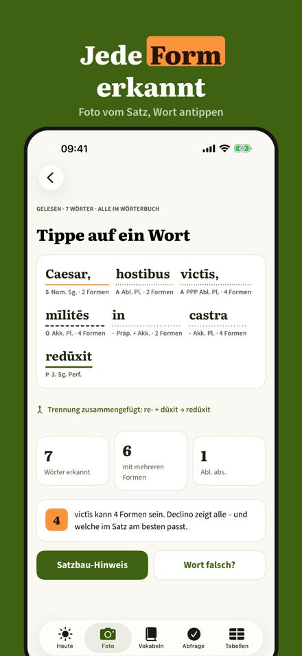
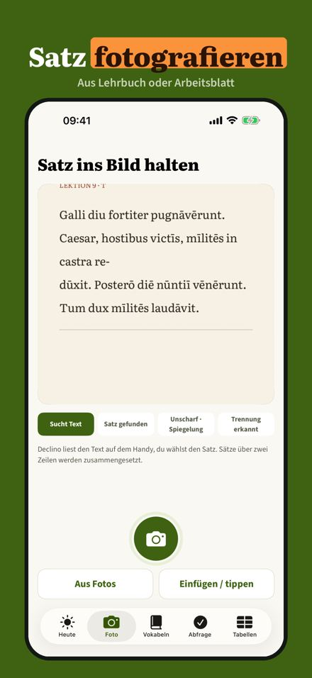
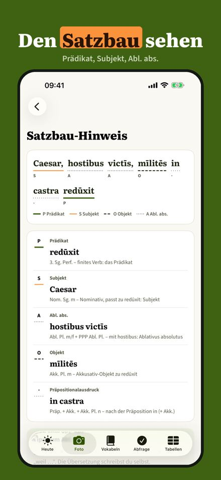
Declino hilft dir, lateinische Sätze zu verstehen statt abzuschreiben. Fotografiere einen Satz aus deinem Lehrbuch und tippe auf ein Wort: Du siehst alle Formen, die es sein kann, und seine Bedeutung. Übersetzen tust du selbst.
• Satz fotografieren, einfügen oder tippen – gelesen auf dem Handy
• Wort antippen: alle möglichen Formen mit Fall, Zahl, Geschlecht, Zeit und Modus
• Bedeutung aus dem Wörterbuch, auf dem Gerät in deine Sprache übertragen
• Satzbau-Hinweis: Prädikat, Subjekt, Ablativus absolutus, AcI
• Vokabelheft nach Lektionen, mit Abfrage in wachsenden Abständen
• Formentabellen zu jedem Wort, deine Form markiert
• Trennstriche und Längezeichen werden erkannt
• Kein Konto, keine Werbung; dein Vokabelheft bleibt auf dem Gerät
Drei Fotos pro Tag, Sätze tippen oder einfügen ohne Grenze, alle Formen, Bedeutungen und Satzbau-Hinweise gehen ohne Kauf. Declino Plus ist ein Einmalkauf: unbegrenzt Fotos, Vokabelheft mit allen Lektionen und Abfrage, Formentabellen. Kein Abo.
Declino erklärt Formen und Satzbau und übersetzt keine ganzen Sätze. Analysen und Bedeutungen sind Vorschläge – prüfe sie mit deinem Lehrbuch. Bedeutungen in deiner Sprache ab iOS 18 mit Sprachpaket, sonst auf Englisch.
Elke vorm in de zin uitgelegd
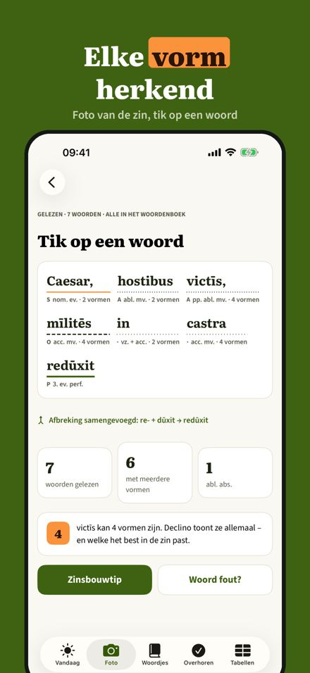
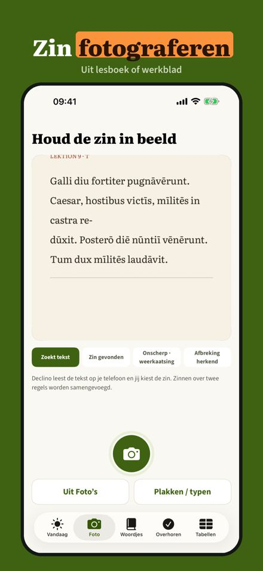
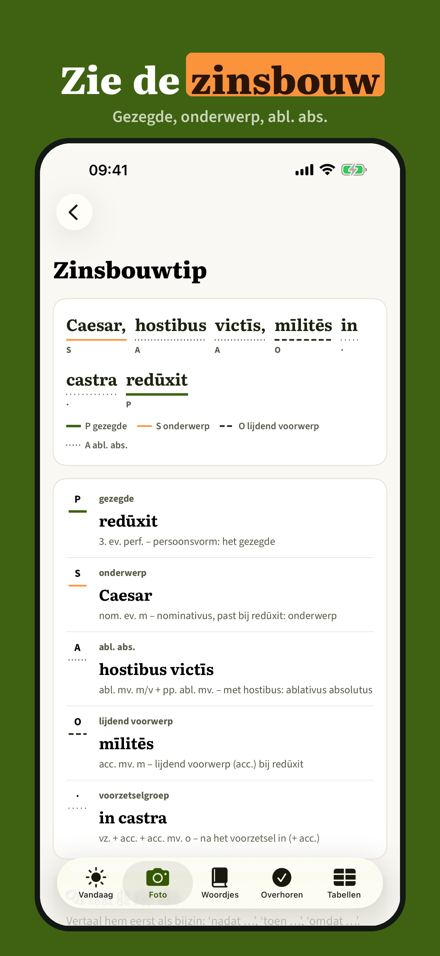
Declino helpt je Latijnse zinnen te begrijpen in plaats van over te schrijven. Fotografeer een zin uit je lesboek en tik op een woord: je ziet alle vormen die het kan zijn en de betekenis. Vertalen doe je zelf.
• Zin fotograferen, plakken of typen – gelezen op je telefoon
• Tik op een woord: alle mogelijke vormen met naamval, getal, geslacht, tijd en wijs
• Betekenis uit het woordenboek, op het toestel naar jouw taal omgezet
• Zinsbouw-hint: gezegde, onderwerp, ablativus absolutus, AcI
• Woordjesschrift per les, met overhoren in groeiende tussenpozen
• Vormentabellen bij elk woord, jouw vorm gemarkeerd
• Afbreekstreepjes en lengtetekens worden herkend
• Geen account, geen reclame; je woordjes blijven op je toestel
Drie foto’s per dag, onbeperkt zinnen typen of plakken, alle vormen, betekenissen en zinsbouw-hints werken zonder aankoop. Declino Plus is een eenmalige aankoop: onbeperkt foto’s, woordjesschrift met alle lessen en overhoren, vormentabellen. Geen abonnement.
Declino legt vormen en zinsbouw uit en vertaalt geen hele zinnen. Analyses en betekenissen zijn suggesties – controleer ze met je lesboek. Betekenissen in jouw taal vanaf iOS 18 met taalpakket, anders in het Engels.
Analisi grammaticale da foto
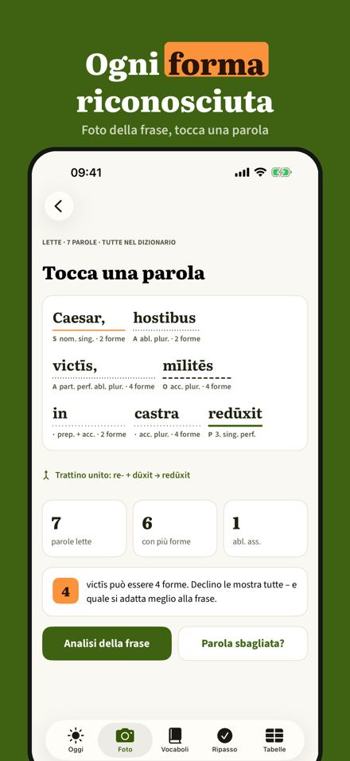
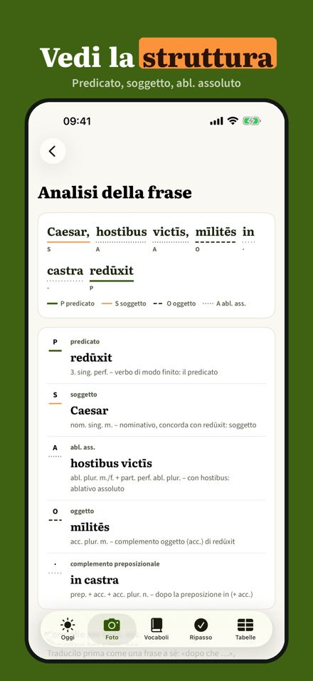
Declino ti aiuta a capire le frasi latine invece di copiarle. Fotografa una frase dal tuo libro e tocca una parola: vedi tutte le forme che può avere e il suo significato. La traduzione la fai tu.
• Fotografa, incolla o scrivi la frase: letta sul telefono
• Tocca una parola: tutte le forme possibili con caso, numero, genere, tempo e modo
• Significato dal dizionario, tradotto sul dispositivo nella tua lingua
• Indizi di struttura: predicato, soggetto, ablativo assoluto, accusativo con infinito
• Quaderno di vocaboli per lezione, con ripasso a intervalli crescenti
• Tabelle di declinazione e coniugazione, con la tua forma evidenziata
• Riconosce i trattini a fine riga e le vocali lunghe
• Nessun account, nessuna pubblicità; i vocaboli restano sul dispositivo
Tre foto al giorno, frasi scritte o incollate senza limiti, tutte le forme, i significati e gli indizi di struttura si usano senza acquisto. Declino Plus è un acquisto unico: foto illimitate, quaderno con tutte le lezioni e ripasso, tabelle. Nessun abbonamento.
Declino spiega forme e struttura e non traduce frasi intere. Analisi e significati sono suggerimenti: controllali con il tuo libro. Significati nella tua lingua da iOS 18 con pacchetto lingua, altrimenti in inglese.
Analiza cada palabra en latín
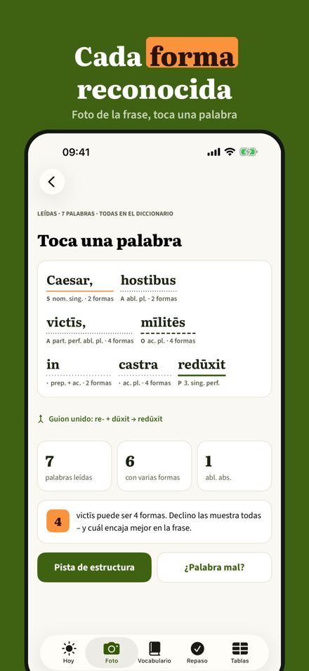
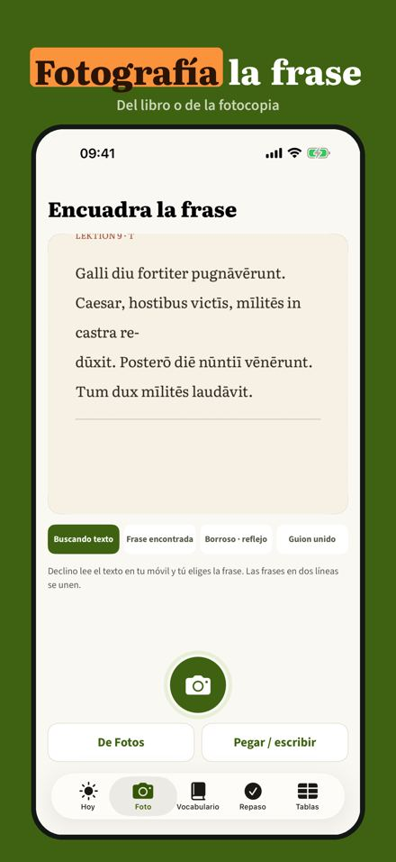
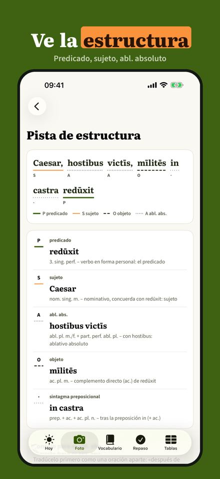
Declino te ayuda a entender las frases en latín en lugar de copiarlas. Fotografía una frase de tu libro y toca una palabra: ves todas las formas que puede ser y su significado. La traducción la haces tú.
• Fotografía, pega o escribe la frase: se lee en tu móvil
• Toca una palabra: todas las formas posibles con caso, número, género, tiempo y modo
• Significado del diccionario, traducido en el dispositivo a tu idioma
• Pista de estructura: predicado, sujeto, ablativo absoluto, AcI
• Cuaderno de vocabulario por tema, con repaso a intervalos crecientes
• Tablas de declinación y conjugación, con tu forma marcada
• Reconoce guiones de fin de línea y vocales largas
• Sin cuenta ni anuncios; tu vocabulario se queda en el dispositivo
Tres fotos al día, frases escritas o pegadas sin límite, todas las formas, significados y pistas de estructura se usan sin compra. Declino Plus es una compra única: fotos sin límite, cuaderno con todos los temas y repaso, tablas. Sin suscripción.
Declino explica formas y estructura y no traduce frases enteras. Los análisis y significados son sugerencias: compruébalos con tu libro. Significados en tu idioma desde iOS 18 con paquete de idioma; si no, en inglés.
Chaque mot analysé en photo
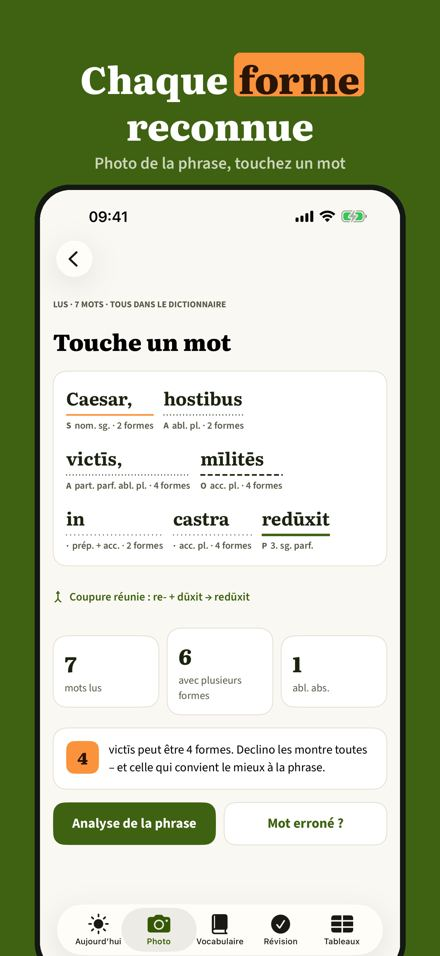
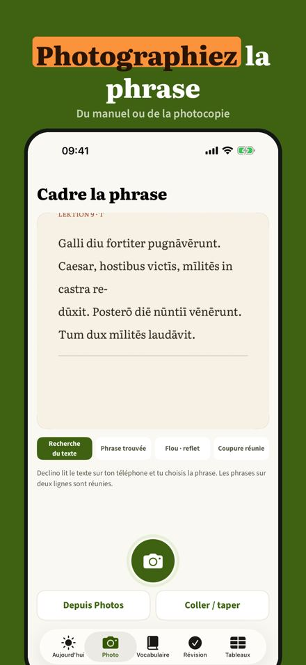
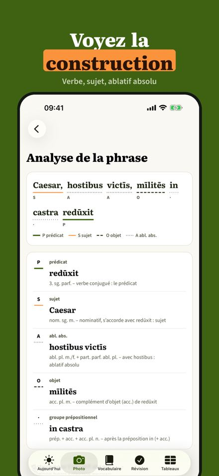
Declino vous aide à comprendre les phrases latines au lieu de les recopier. Photographiez une phrase du manuel et touchez un mot : vous voyez toutes ses formes possibles et son sens. La traduction, c’est vous.
• Photographiez, collez ou tapez la phrase : lue sur le téléphone
• Touchez un mot : toutes les formes possibles avec cas, nombre, genre, temps et mode
• Sens tiré du dictionnaire, traduit sur l’appareil dans votre langue
• Indice de construction : verbe, sujet, ablatif absolu, proposition infinitive
• Carnet de vocabulaire par leçon, avec révision à intervalles croissants
• Tableaux de déclinaison et de conjugaison, votre forme repérée
• Reconnaît les coupures de fin de ligne et les voyelles longues
• Sans compte ni publicité ; votre vocabulaire reste sur l’appareil
Trois photos par jour, phrases tapées ou collées sans limite, toutes les formes, le sens et les indices de construction s’utilisent sans achat. Declino Plus est un achat unique : photos illimitées, carnet avec toutes les leçons et révision, tableaux. Sans abonnement.
Declino explique les formes et la construction et ne traduit pas de phrases entières. Analyses et sens sont des suggestions : vérifiez-les avec votre manuel. Sens dans votre langue à partir d’iOS 18 avec le pack de langue, sinon en anglais.
Każda forma zdania wyjaśniona
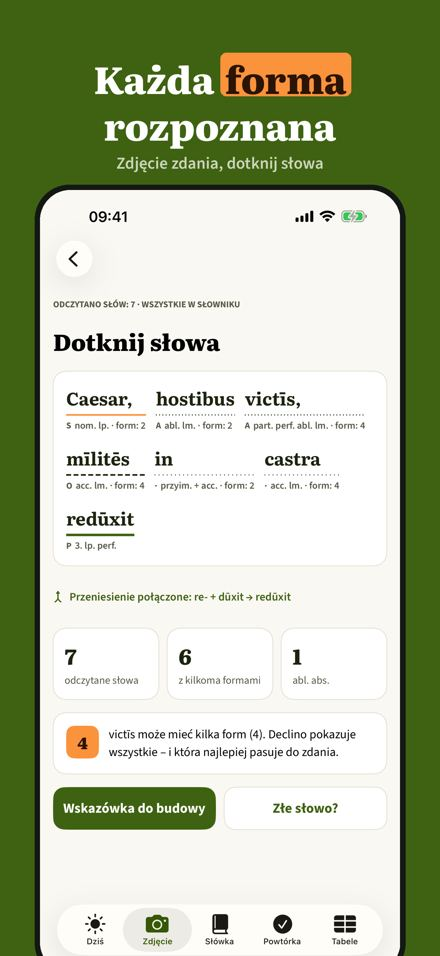
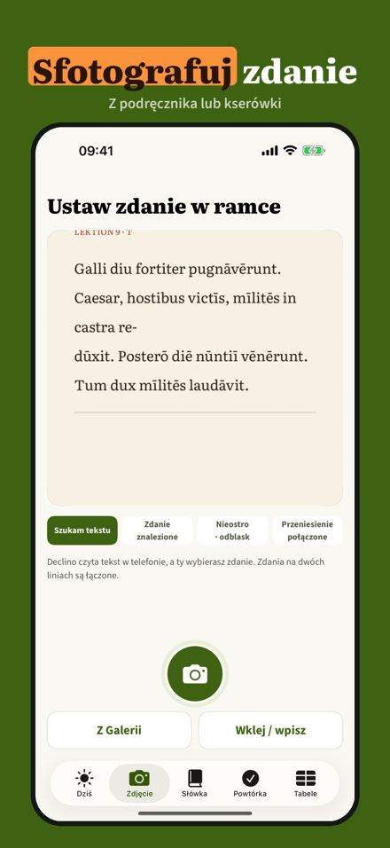
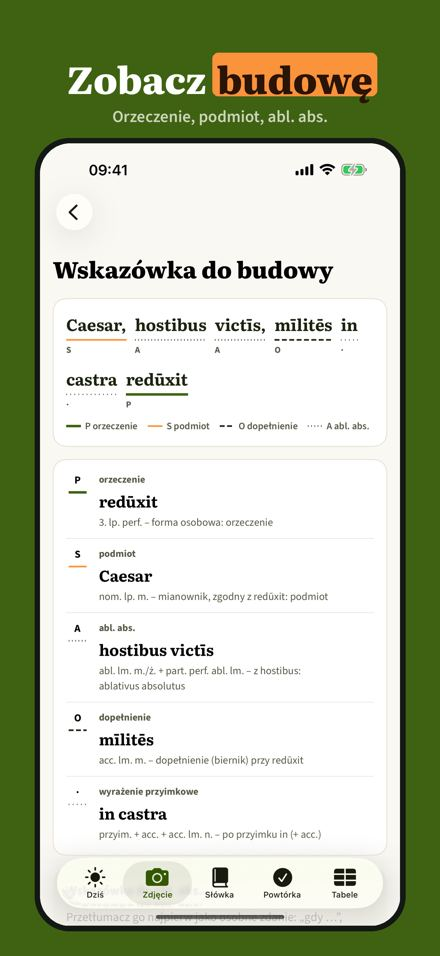
Declino pomaga rozumieć łacińskie zdania zamiast je przepisywać. Zrób zdjęcie zdania z podręcznika i dotknij słowa: zobaczysz wszystkie formy, którymi może być, i jego znaczenie. Tłumaczysz sam.
• Zdjęcie, wklejenie lub wpisanie zdania – odczyt w telefonie
• Dotknij słowa: wszystkie możliwe formy z przypadkiem, liczbą, rodzajem, czasem i trybem
• Znaczenie ze słownika, przełożone na urządzeniu na Twój język
• Wskazówka budowy: orzeczenie, podmiot, ablativus absolutus, AcI
• Zeszyt słówek według lekcji, z powtórkami w rosnących odstępach
• Tabele odmiany do każdego słowa, Twoja forma zaznaczona
• Rozpoznaje dzielenie wyrazów i samogłoski długie
• Bez konta i reklam; słówka zostają na urządzeniu
Trzy zdjęcia dziennie, wpisywanie i wklejanie zdań bez limitu, wszystkie formy, znaczenia i wskazówki działają bez zakupu. Declino Plus to jednorazowy zakup: zdjęcia bez limitu, zeszyt ze wszystkimi lekcjami i powtórkami, tabele. Bez subskrypcji.
Declino wyjaśnia formy i budowę zdania, nie tłumaczy całych zdań. Analizy i znaczenia są sugestiami – sprawdź je z podręcznikiem. Znaczenia w Twoim języku od iOS 18 z pakietem językowym, inaczej po angielsku.